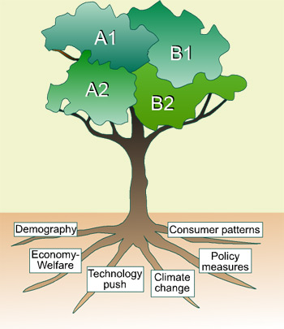

| The future of Europe is not only determined by Europe
itself, but depends partly on developments on the global level. Growing
populations and income in other countries, such as China, India and Brazil,
the future of international trade barriers and trade opportunities, the
Euro/US dollar rate and the oil price, are examples of factors that are
outside the EU but that influence our daily life ánd our future. The scenario approach tries to specify consistent story lines that distinguish between the nature, rate and extent of various driving forces. The following drivers are distinguished: |
 |
EU-enlargement and trade arrangements (WTO)
The effects of the EU enlargement in 2004 will become more clearly over time,
both in the old EU15 as in the new member states. In some scenarios further
expansion is possible. International agreements (eg WTO) have not made much
progress lately, but this might change over the coming years. Geopolitical relations
will determine trade barriers and influence the patterns of international trade.
Macro-economic growth
The world economy is a powerful determinant of changes in agriculture and other
sectors (eg industry and services). Higher incomes lead to a changing food demand.
In general when poor people can spend more money. Diets may also change towards
more expensive products such as fruits and vegetables and especially meat and
dairy. Changes in food demands, both in the EU and outside the EU, are likely
to influence EU agriculture.
Demography
Demographic change is an important driver. The growth or decline of populations
and major migration flows influence the demand for food directly, but also indirectly
the availability of farm workers. In case of declining population growth of
the number of ageing of people is important especially in remote rural areas.
Also in rural areas the flow of people into the towns is relevant.
Technology
Technology is a major driver. It has caused major and fast shifts in agriculture
via higher efficiency in production (per farm, per hectare, per hour). In future
these shifts will continue, both inside and outside Europe. This trend interacts
with the development of other economic sectors which can then use the capital,
labour, space that is freed by the process of agricultural evolution. Examples
of other advances that will influence rural Europe are information technology,
logistics and infrastructure. New inventions are hard to predict, but once their
relevance has been shown, rapid dissemination of technologies can nowbe assumed.
Climate change
Climate change and sea level rise are affecting natural systems, which in turn
may have major impacts on society. Climate change up to 2030 is likely to not
to be influenced. But the effects of different abatement policies may become
more clearly visible after 2030.Climate change not only leads to a rise in average
temperature, but also is likely to cause more extreme events, such as heavy
rainfall, or long periods of drought.
Consumer behaviour
Consumer patterns encompass al kinds of human preferences and behaviour. These
preferences and behaviour generally change slowly but their impact is significant.
Diet preferences, the attitude towards animal welfare, views on nature conservation
and environmental protection and the acceptance of government intervention are
examples of human behaviour that inpact on the future of rural areas.
EU and national policies
The European Commission and national governments try to steer the future in
the right direction - or prevent it going in the wrong direction! - and develop
policy measures. Policy is made at various scales. In Eururalis strategic policy
measures that are generally implemented at the EU-level are looked at. These
include environmental policies and rural development policies etc.
Each of these drivers is clarified more extensively in its own sheet. For each
of the four basic scenarios a link to an extended list of assumptions is available.